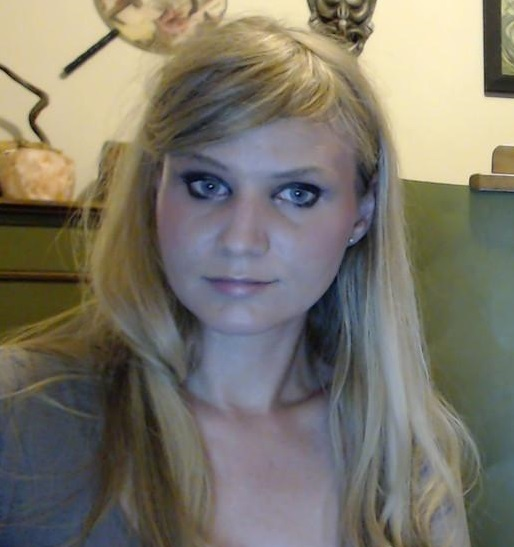

About Me:
I'm originally from Northern California, though I have lived most of my life in Missoula. My interests include: herb and flower gardening, reading fiction, walking around in the woods, learning about hermetic alchemy, and listening to podcasts. I spend a lot of time caring for four adorable, sweet bunnies, five fluffy pet chickens, and one totally mean cat.